residency host

STARTSAQUAMOTION is co-funded by the European Union under the STARTS — Science,
Technology and Arts initiative of DG CNECT (GA no. LC-03568055). Views and opinions
expressed are those of the author(s) only and do not necessarily reflect those of the
European Union or DG CNECT. Neither the European Union nor the granting authority can
be held responsible for them.